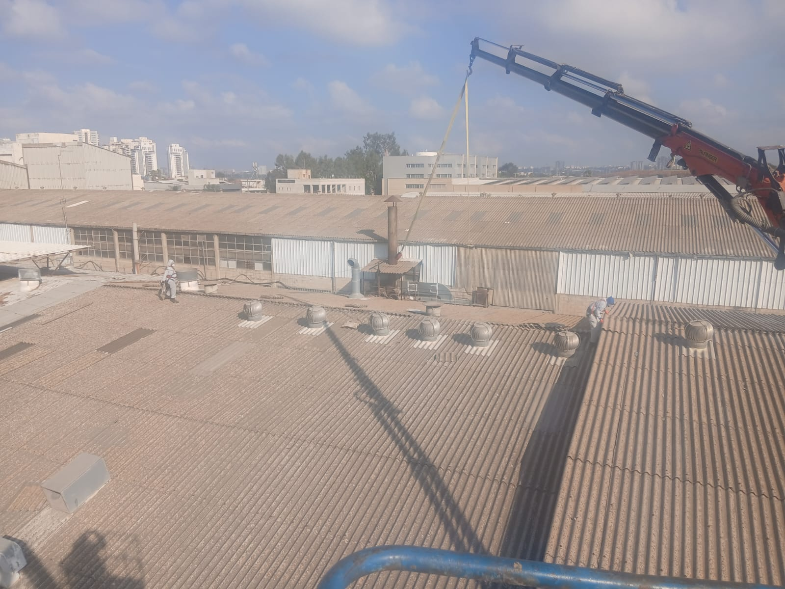

01פינוי ופירוק אסבסט
מקצועי, מורשה ובטוח – לכם, לשכנים ולסביבה
אסבסט הוא חומר מסרטן שאסור לפרק בלי ידע, ציוד והיתרים. אנחנו מבצעים את כל התהליך לפי הנחיות המשרד להגנת הסביבה – מהסקר ועד תעודת הפינוי לאתר הטמנה מורשה.
- סקר אסבסט ואבחון המבנה
- טיפול בהיתרים ובבירוקרטיה
- פירוק גגות וקירות אסבסט צמנט
- עטיפה, סימון ושינוע מאובטח
- פינוי לאתר הטמנה מורשה
- ניקוי השטח ותיעוד מלא